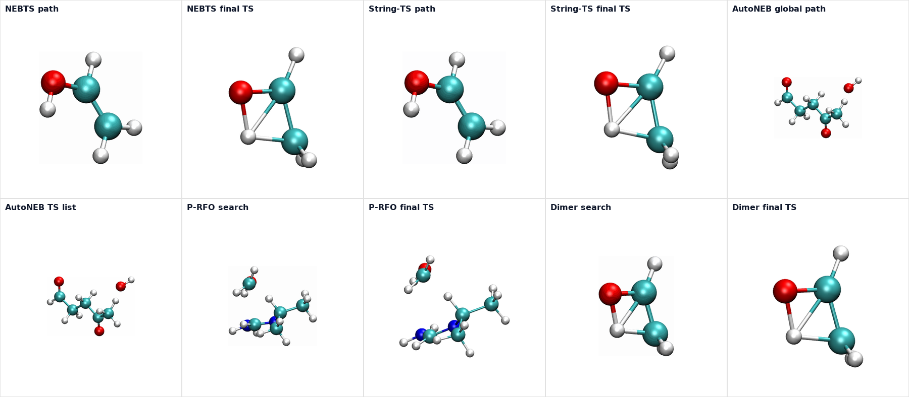

Transition State Search
Overview
A transition state (TS) is a first-order saddle point on the potential energy surface (PES). It is characterized by exactly one imaginary vibrational frequency, corresponding to the reaction coordinate that connects reactant and product basins. Finding accurate TS geometries is essential for computing activation energies, predicting reaction rates, and understanding reaction mechanisms.
Unlike local minima, a TS is a maximum along one direction (the reaction coordinate) and a minimum along all remaining degrees of freedom. The unique imaginary mode of the mass-weighted Hessian at the TS defines the direction of bond breaking and bond forming.
Available Methods
MAPLE provides five transition state search algorithms, each suited to different problem types:
| Method | Keyword | Description |
|---|---|---|
| P-RFO | prfo |
Partitioned Rational Function Optimization. Refines a guess geometry near the TS using trust-region steps that maximize along one Hessian mode while minimizing along all others. |
| NEB | neb |
Nudged Elastic Band. Requires reactant and product structures. Builds a minimum energy path (MEP) using a chain of images connected by spring forces. |
| Dimer | dimer |
Minimum-mode following method. No endpoint structures needed. Uses two images separated by a small distance to estimate and follow the lowest curvature mode. |
| String/GSM | string |
Growing String Method. Adaptive path growth from both endpoints followed by the current String-TS finalization path. |
| AutoNEB | autoneb |
Automated multi-step NEB workflow. Recursively subdivides the reaction path to discover all intermediates and transition states in complex multi-step reactions. |
Choosing a Method
The best method depends on what information you have and the complexity of the reaction:
- You have a good TS guess (e.g., from a previous NEB or chemical intuition) → Use P-RFO for fast local refinement.
- You have both reactant and product structures → Use NEB or String/GSM to find the MEP and locate the TS along it.
- You only have one structure and no product → Use the Dimer method to explore the PES landscape from a single starting point.
- The reaction has multiple steps or intermediates → Use AutoNEB to automatically discover all stationary points along the pathway.
- Large systems with many atoms → String/GSM is often more efficient than NEB due to adaptive path growth.
General Workflow
A typical transition state search workflow follows these steps:
- Optimize endpoints. Ensure your reactant and product geometries are properly optimized local minima. Poorly optimized endpoints can cause path-based methods to fail or converge to spurious saddle points.
- Run the TS search. Choose an appropriate method (
neb,string,dimer, orprfo) and run the calculation. For path-based methods, the highest-energy image (HEI) provides an initial TS estimate. - Refine the TS. For NEB, use
refine=cineborrefine=nebts. For String/GSM, userefine=cistringorrefine=stringts; other TS methods rejectrefine. - Verify with a frequency calculation. Confirm the TS has exactly one imaginary frequency. If there are zero or more than one imaginary frequencies, the geometry is not a true first-order saddle point.
- Run IRC. Perform an intrinsic reaction coordinate (IRC) calculation from the TS to confirm that it connects the expected reactant and product.
Refine Options Lookup
refine is an optional parameter inside the #ts(...) command. It is not a separate header line. Use it only with methods that accept a second refinement stage; omit it when you want the base TS search workflow.
# Base NEB path search
#ts(method=neb)
# NEB path search followed by NEBTS refinement
#ts(method=neb,refine=nebts)
# String/GSM path search followed by String-TS refinement
#ts(method=string,refine=stringts)
# P-RFO, Dimer, and AutoNEB do not accept refine
#ts(method=prfo)Use this table to match each accepted refine value with the TS workflow it triggers. Unsupported method/refine combinations are rejected during input parsing.
| TS Method | refine Value |
Accepted? | Workflow Meaning | Main Output |
|---|---|---|---|---|
neb |
None | Yes | Run the base NEB path search and extract the highest-energy image. | *_mep.xyz, *_hei.xyz |
neb |
cineb |
Yes | Run NEB, then climb the highest-energy image with CI-NEB. | *_cineb_*.xyz |
neb |
nebts |
Yes | Run NEB, refine the path with CI-NEB, then optimize the TS with P-RFO. | *_nebts_mep.xyz, *_nebts_ts.xyz |
string |
None | Yes | Run the base String/GSM path search and extract the highest-energy image. | *_gsm_mep.xyz, *_gsm_hei.xyz |
string |
cistring |
Yes | Accept the CI-String-style refinement setting for the String/GSM workflow. | *_gsm_mep.xyz, *_gsm_hei.xyz |
string |
stringts |
Yes | Run String/GSM, select the highest-energy image, then optimize the TS with P-RFO. | *_stringts_mep.xyz, *_stringts_ts.xyz |
prfo, dimer, autoneb |
Any value | No | These methods do not accept refine; run them without a refine keyword. |
Method-specific TS/search outputs |
Visualization Gallery
The gallery below uses the checked-in TS example outputs rendered with MAPLE Visual Lab. Atom indices are hidden in these web-ready figures. Path and search animations on the method pages include energy traces, while single-geometry TS snapshots are shown as structure-only figures.

TS refinement keywords are method-specific. MAPLE validates them during input parsing: NEB accepts cineb and nebts; String/GSM accepts cistring and stringts; P-RFO, Dimer, and AutoNEB do not accept refine.